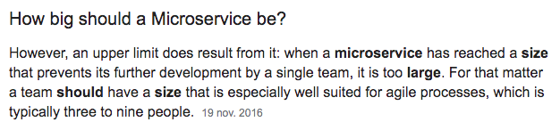
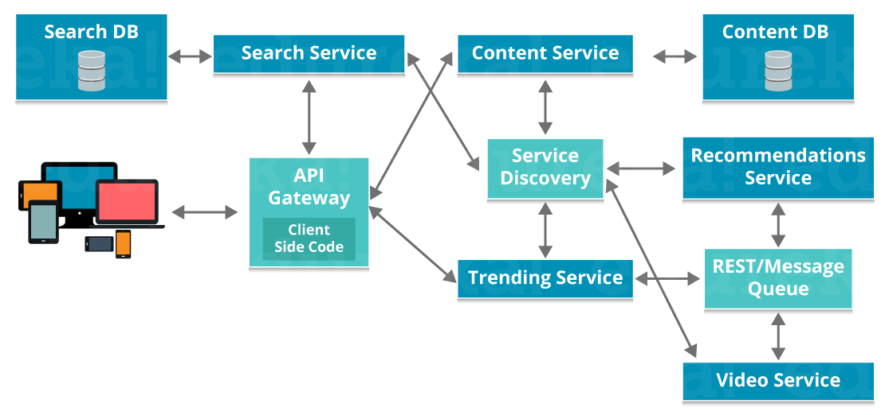
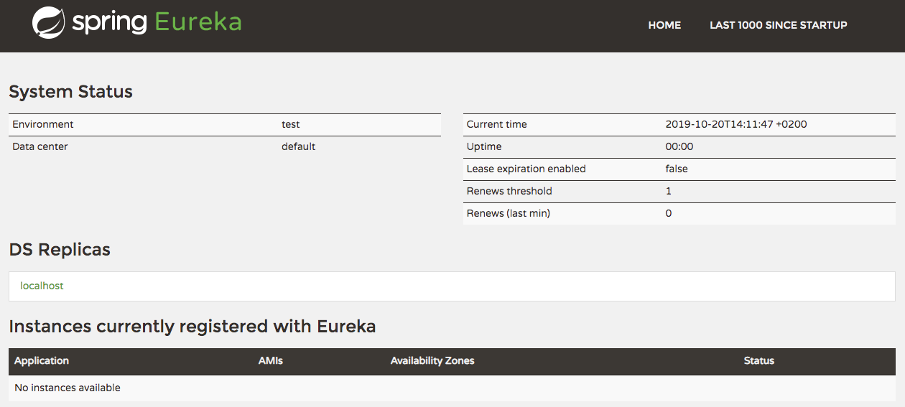
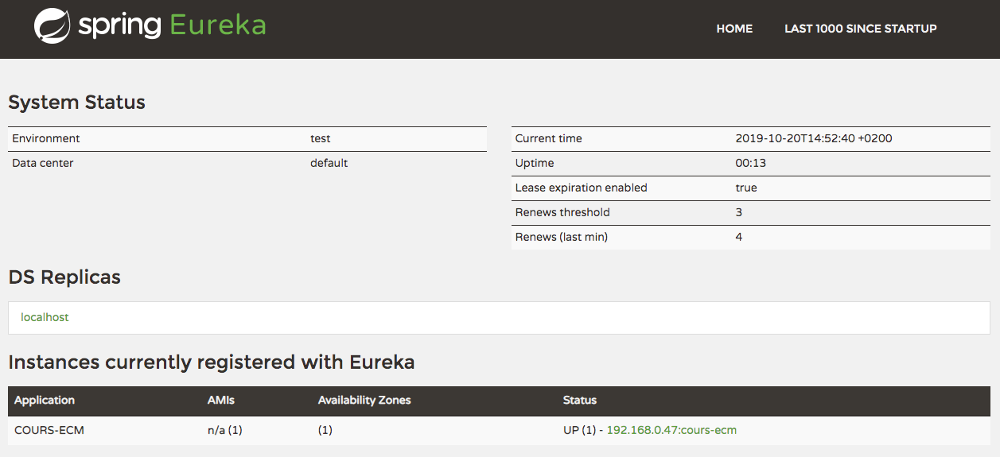
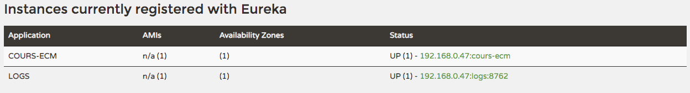
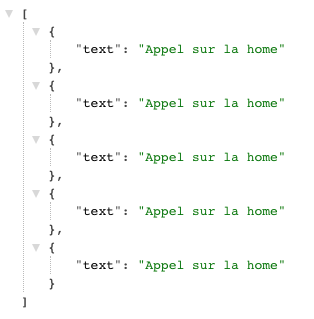

Microservices
L'architecture en microservices est très à la mode. C'est très chic en soirée.

Cependant, ce n'est pas la solution à tous les problèmes et ce n'est très certainement pas la bonne façon de débuter un projet.
Cette architecture permet de répondre à des challenges qui surviennent lorsque l'on monte en charge : traffic, codebase, nombre de développeurs...
Netflix, Amazon, Ebay... ils ont tous commençé par une architecture simple, monolithique (d'un seul tenant).
Quels sont les avantages ?
Les avantages principaux sont les suivants :
- Testabilité et Maintenabilité
- Déploiements indépendants
- Evolutivité simplifiée des technologies (bases de données...)
- Organisation en sous équipes fonctionnelles
Et les inconvénients ?
Les microservices ne sont la solution à tous les problèmes :
- Plus longs à mettre en place
- Plus difficiles à superviser
- Demandent plus de ressources (VMs, RAM...)
L'architecture en microservices n'est pas un objectif en soi, mais bien un moyen de dépasser une limite que l'on atteint lorsque le codebase croit.
Quelle est la taille d'un microservice ?
Il n'y a pas de taille idéale ou standard pour un microservice.
{kind=link}
Chaque microservice gère une sous partie du problème global.
Idéalement, ces parties sont indépendantes les unes des autres.
Comment cela fonctionne ?
Chaque application est déployée indépendamment.
Elle peut être exposée au public via une gateway (un point d'entrée depuis l'extérieur qui fait le routage).
Elles communiquent entre elles via l'interface http.
Chaque microservices peut avoir un système de persistance de données.
{kind=link}
source https://www.edureka.co/blog/microservices-tutorial-with-example
Chaque microservice est déployé plusieurs fois afin de permettre une tolérance à la panne.
Edge microservices
Les edge microservices sont un type particulier de microservices : ils permettent d'orchestrer les autres microservices.
Par exemple, la gateway est la porte d'entrée depuis l'extérieur vers nos microservices.
La gateway est accessible via un nom de domaine, par exemple api.modomain.fr.
Les microservices que l'on souhaite exposer sont accessibles via un chemin, /content ou /search.
Spring cloud
Spring cloud est la partie spring pour les microservices.
Il propose, notamment, les parties suivantes :
- registre de l'ensemble des microservices disponibles (discovery)
- routage des requêtes entrantes vers le bon microservice (gateway)
- configuration : permet de configurer tous les microservices depuis un point central
- appels entre les services (avec failover et load balancing)
- traçabilité des appels au travers des microservices
Plus sur https://spring.io/projects/spring-cloud
Nous allons tester quelqu'unes de ces fonctionnalités.
Discovery
Nous allons mettre en place un service registry avec spring cloud et eureka (le service registry de netflix).
➤ Sur https://start.spring.io/ créez un projet avec la dépendance Eureka Discovery Client
➤ Puis dans la configuration (application.properties) :
server.port=8761
eureka.client.register-with-eureka=false
eureka.client.fetch-registry=false
logging.level.com.netflix.eureka=OFF
logging.level.com.netflix.discovery=OFF➤ Et sur l'Application :
@EnableEurekaServer➤ Démarrez ensuite le service et allez sur http://localhost:8761/
Vous devriez avoir l'interface suivante :
{kind=link}
Pour le moment, aucune application n'est enregistrée.
Notre application dans discovery
➤ Dans le build.gradle de notre application, ajoutez
ext {
set('springCloudVersion', "Greenwich.SR3")
}➤ Et
dependencyManagement {
imports {
mavenBom "org.springframework.cloud:spring-cloud-dependencies:${springCloudVersion}"
}
}(C'est la gestion de dépendances pour spring cloud)
➤ Puis sur l'Application
@EnableDiscoveryClient➤ Et enfin, afin d'avoir le bon nom de notre application, rajoutez dans l'application.properties
spring.application.name=cours-ecm➤ Après démarrage de l'application, vous devriez avoir l'application qui apparait dans discovery :
{kind=link}
Un deuxième microservice
Pour le moment, notre service se sent un peu seul.
➤ Créez une nouvelle aplication logs depuis start.spring.io
avec Eureka Discovery Client et OpenFeign
➤ Dans l'Application, ajoutez :
@EnableDiscoveryClient➤ et dans application.properties
spring.application.name=logs
server.port=8762➤ Puis démarrez l'application. Nos 2 services sont désormais prets à communiquer.
{kind=link}
La communication
Nous avons actuellement 3 services :
Les logs
➤ Coté service logs, ajoutez le @RestController suivant
@RestController
@RequestMapping('/logs')
class LogController {
List<Log> logs = []
@GetMapping
List<Log> get() {
logs
}
@PostMapping
void post(@RequestBody Log log) {
logs.add(log)
}
}➤ avec sa classe Log
class Log {
String text
}➤ et redémarrez le service
Le client feign
➤ De l'autre coté, dans notre application, ajoutez la dépendance feign.
implementation 'org.springframework.cloud:spring-cloud-starter-openfeign'Feign
C'est une librairie développée par Netflix qui permet de simplifier les appels HTTP vers des APIs REST.
➤ Puis activez le support feign de spring :
@EnableFeignClients➤ Ce qui nous permet de déclarer l'interface suivante :
@FeignClient('logs')
interface LogsClient {
@RequestMapping(method = RequestMethod.POST, value = "/logs")
void post(Log log);
}(Il faut redéclarer la classe Log à coté de notre LogsClient)
Ce client va donc faire des appels vers le service 'logs' en utilisant les chemins indiqués.
Appels
➤ Injectez le LogsClient à différents endroits dans les controllers
@Autowired
LogsClient logsClient➤ puis faites des appels du type :
logsClient.post(new Log(text: 'Appel sur la home'))➤ Après quelques tests, vous devriez avoir quelques enregistrements sur http://localhost:8762/logs
{kind=link}
Bien sûr, il ne serait pas raisonnable de stocker en mémoire, en production, tous les logs comme nous le faisons là.
Ribbon et Hystrix
Avec Spring et Feign, nous avons Ribbon gratuitement. Ribbon permet de faire du load balancing, coté client, entre plusieurs instances du même microservice. Cela active automatiquement le failover si un sous service devient indisponible.
Hystrix couvre ce qui se passe en cas d'erreur sur un appel. Il permet de mettre en place un court circuit (Circuit Breaker) afin de produire une réponse valide même si un sous système est défaillant.